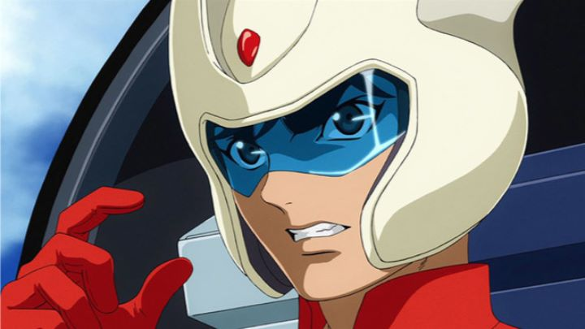

Around 2018, prolific manga author Go Nagai was celebrating the 50th anniversary of his classic creations. A handful of new anime productions were released to commemorate this. Netflix exclusive "Devilman Crybaby" was released first, and its success and popularity took almost all the attention away from the other two productions: a new series for "Cutie Honey," and a theatrical film for "Mazinger Z" called "Mazinger Z - Infinity." All of these properties are considered classics in Japan. However, having been at their peak of popularity in the 1970's, modern tastes have changed. Personally, I don't feel any nostalgia for most anime properties pre-1990, and unfortunately have an unintentional bias against most of those franchises. Additionally, I might be one of the only viewers who didn't see the recent "Devilman - Crybaby" as a perfect masterpiece: based on what I've been exposed to, I don't think I particularly like Go Nagai's stories or style. But I blindly gave "Mazinger Z - Infinity" a chance, with the same feeling of curiosity I had when watching "Evangelion 1.01," my first exposure to that particular sci-fi series. This is probably unwise, since I knew nothing about the "Mazinger" francshise, and the film appears to be a sequel story. To have a sequel decades after the original anime might be a dream come true to existing fans, but not to me, and with so many characters and exposition thrown in from the get-go, that information is necessary to follow the movie. As a complete newcomer, I realized within the first 20 minutes that it was probably the worst anime film I had seen from this decade. "Infinity" isn't simply a sci-fi anime a-la "Mobile Suit Gundam." It's really a giant-robot-vs-kaiju-monsters story, a genre that was popular with children from 1970 to 1990. We get a glimpse of dozens of random monster designs in the movie: if you pause, you'll see how absurd many of them are (one looks like a giant Santa Claus riding a sleigh). Set a decade after the main storyline, the hero pilot of the mighty Mazinger Z, Koji Kabuto, has retired the robot to a museum, and works as a scientist. He discovers in the ground a female automaton, as well as a massive Mazinger robot many multitudes larger than what they've seen, which they dub "Infinity." As they ponder where it came from, classic villains come in to attack, cackling with glee, until a more serious villain alien is revealed with the intention to harvest the Earth's power resources.At best, "Mazinger Z - Infinity" recreates the story and emotions that I remember from Saturday-morning cartoons. Made-up science is spouted all over, too complex to easily follow but simple enough for a child to go along with. All of the characters, mostly adults, act like children. The automaton, named Lisa, doesn't act at all like a robot, able to speak perfectly like a human while occasionally mentioning she doesn't understand human emotion. The show is funny, and often, unintentionally funny. Throughout the film, I couldn't stop thinking how stupid the whole thing was, and how I still wasn't particularly having fun watching it.  Miraculously, things to get a bit better in the final third of the movie, when the robot battle finally begins. Early parts of the battle have one robot kicking a spiked soccer ball to richochet off an army of monsters, and other group of female robots yell "BREAST MISSLES!" as they lauch their attack. Deep down, the movie knows how silly it is, and it's when it gives into it that we get moments of entertainment. Even after the jokey robots are out of the way, the 3D robot battle in that final act nearly saves the movie, with a lot more fun action than I anticipated. The production values are even more bizarre. Large city-scale battles use 3D animation, but everything else uses 2D animation... even for vehicles and backgrounds. Perhaps the team was intentionally trying to recreate an old style of animation, but the result just looks unbearably cheap, with animation that looks worse than any other televised anime from 2017 (as a reminder, "Infinity" is a theatrical film). The only visual merit during these moments are the character designs: most of them look dated and dull, but a few comedic side-characters have more personality. The 3D battles make up less than 20% of the movie, and while they look a bit more up-to-date, somehow... I was most impressed with the 3D character animation in the robots, which contains some of the best animation in the entire film. There's also a surprising amount of blatant product placement, with VIAO laptops and NISSAN cars appearing in the first 10 minutes. Audio is usually an easy way to get back extra points, but "Mazinger Z - Infinity" has a boring soundtrack (even the original theme song can't save it), and the English dub struggles with such a wooden script (for authenticity with this type of story, Japanese dub is definitely the way to go). To find any enjoyment in "Mazinger Z - Infinity," you need to keep your expectations in check. Despite it's intentions, you can't take it seriously for a moment: it's at its best when it leans into absurd and wacky logic, and goofy characters. You need to have a deep love and some nostalgic memories for classic shows and movies that feature giant robots yelling out their names as they fight Godzilla-like monsters against the backdrop of Mt. Fuji. And you MUST have seen the original anime or manga, MUST know and love the original characters. If you don't meet all of these criteria, you'll regret wasting your time with the movie. ... ok, "waste" might be a strong word. Drop in and watch only the last 30 minutes, and you'll probably have a good time. Don't worry, you aren't missing anything with this strategy.
- "Ani" More reviews can be found at : https://2danicritic.github.io/ Previous review: review_Mayo_Chiki! Next review: review_Megalobox